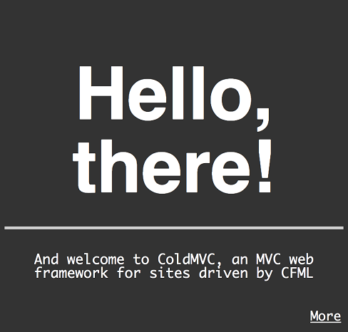
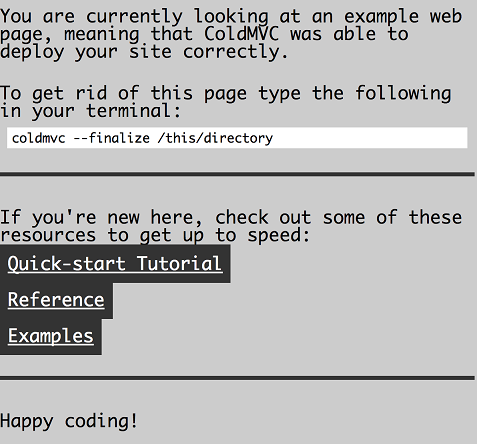

ColdMVC is a web framework for ColdFusion and Lucee application servers. It is supposed to facilitate development via MVC within ColdFusion applications and make it trivial to enforce “seperation of concerns”.
ColdMVC can be downloaded via its homesite or via Github. You can clone the latest version by using the following on your system:
git clone https://github.com/zaiah-dj/coldmvc.git
ColdMVC requires either ColdFusion or Lucee to work. If you are totally new to ColdFusion and/or Lucee, you will want to get a copy and install it on your system. I would surmise the easiest way to get going is to start with Lucee’s express build. It needs no special rights to run on your system and can be downloaded here.
ColdMVC is administered via shell script right now, and has been tested on Linux, OSX and Cygwin. A detailed list of the versions tested follow. Windows users will need either Git Bash or Cygwin to run the tooling at the moment.
New projects can be setup using a command line similar to the the following.
./coldmvc.sh -c -f /path/to/coldfusion/webroot/path-of-site -n 'site-name'
This is the absolute smallest set of options needed to create an instance of a ColdMVC site on your system.
Notice that you will need to specify the absolute path to where your Lucee or ColdFusion webroot, then append the name of the directory that will hold your web files. (This will change in the future, do not worry.) ‘site-name’ is the symbolic name of your site, but will also be used as the title and domain name of the site if those flags are not specified. After the command runs successfully, you should be able to visit a link that looks like the following (provided you have not changed the Lucee or ColdFusion default port number): http://localhost:8888/site-name
You should see something similar to the following screenshots.  
Or if you were unfortunate, you will see an exception with a big, fat 500 error message. If something like this occurs, please contact me via ramar dot collins at gmail dot com, and I’ll try to help you through the error.
Additional documentation can be found via this link